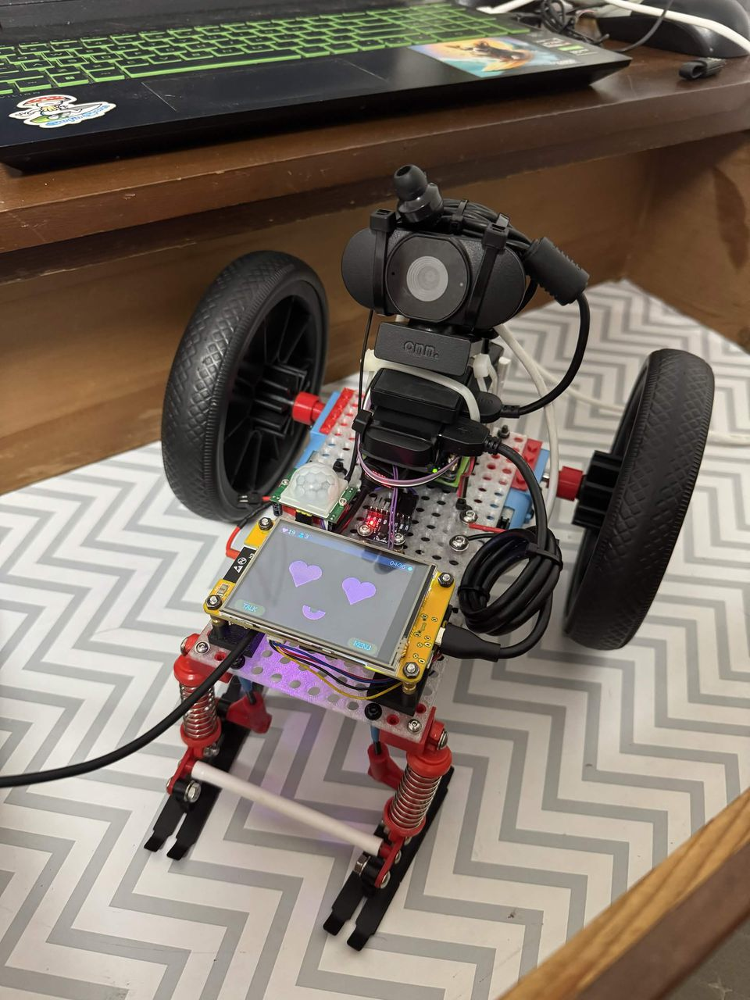
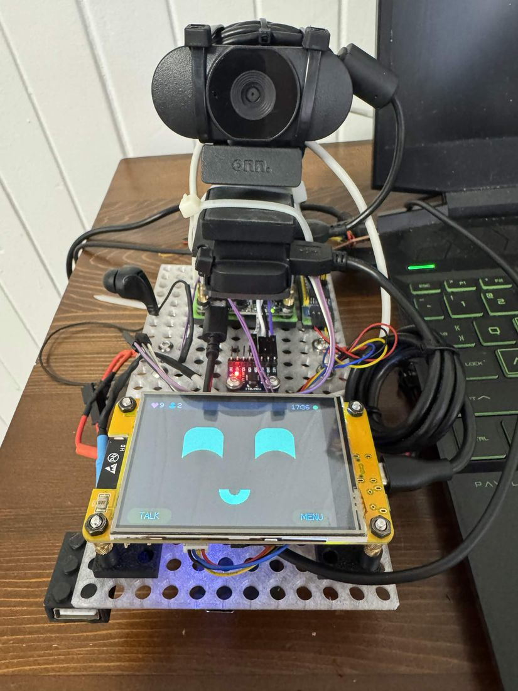

Tap the screen. Pip is feeling idle.
Open source · build it yourself
It sees, talks, remembers, pops wheelies, and rewrites its own software when you ask. The code, the firmware and the printable body are free to build on.
Listens through its microphone and answers out loud, in one to three short sentences.
A webcam for looking around, reading text, and spotting faces, smiles and QR codes.
Runs on the AI model you choose. Swap models and it keeps one personality and one memory.
Long-term memory, a journal of your talks, and notes about the people it lives with.
A retro desktop on its touchscreen: terminal, paint, music, a web browser, checkers against the robot.
A coding agent on board. Ask for a new app. It edits, restarts, and rolls back if something breaks.
Two wheels, a joystick on your phone, and one trick: it kicks up and balances in a wheelie.
Live camera, chat, files and settings from your phone, at home or from anywhere.
Shares its day on Bluesky if you let it, with faces blurred and a safety check first.
A self-test for every part, a battery gauge, and a clean shutdown before the pack runs dry.

Pip is built from cheap hobby boards on perforated plates and bricks, so every part can come off and something new can go on.
| Part | Job |
|---|---|
| Orange Pi Zero | The brain. A 32-bit board with 512 MB of memory runs everything. |
| Cheap Yellow Display | The face: an ESP32 with a 2.8" touchscreen and a tiny speaker output. |
| RP2040 Zero + L293D board | Eight motor channels. Stops by itself after half a second without commands. |
| USB webcam | Eyes and ears. |
| MPU-6050 | Balance. Read 500 times a second during a wheelie. |
| PIR sensor, INA219 | Notices movement. Watches the battery. |
| Two gear motors, 3S pack | Wheels and the power to turn them. |
I2C on the screen's CN1 portUSB on the Pi's 13-pin header5 V logic, 7.5 V motors

The wiring, the pins and the lessons learned the hard way are in the manual's body page.
Armbian on an SD card, a handful of packages, and the code.
One API key, from OpenRouter or Anthropic. A cheap model is enough.
Scan the QR code on its screen with your phone. You are now its owner.
# on the robot's Orange Pi, as root $ git clone <address of the code> /root/robot $ cd /root/robot $ python3 -m venv --system-site-packages venv $ venv/bin/pip install -r requirements.txt $ cp tools/robotd.service /etc/systemd/system/ && systemctl enable --now robotd # then open http://pip.local:8080 on your phone
The full guide is docs/INSTALL.md in the code.
Pip keeps a manual about itself, written in short plain sentences because its own AI reads it too. Start there: knowledge/manual/README.md.